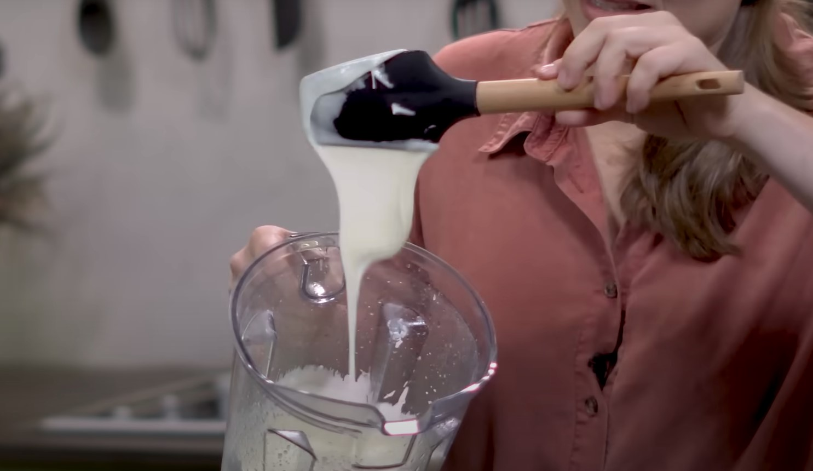
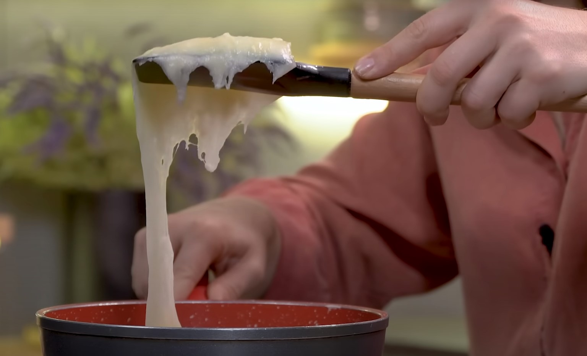

1½ xícara de purê de mandioca cozida (5m na pressão)
1 xícara de água
½ xícara de polvilho doce
½ xícara de polvilho azedo
¼ xícara de óleo de coco sem sabor
1½ colher de chá de sal
1 colher de sopa de suco de limão
1 pitada de açafrão (para dar cor ao queijo)
1½ de levedura nutricional
Coloque no liquidificador e bata até ter uma mistura homogênea
- Purê de mandioca
- Óleo de coco
- Água
- Sal
Adicione:
- Polvilho azedo
- Polvilho doce
- Limão
- Açafrão
- Levedura nutricional
E bata novamente por 3 minutos
Ao final do processo, deverá estar com a seguinte textura:

Leve ao fogo, em uma panela/frigideira antiaderente por uns 10 minutos.
Quando a textura e cor começarem a mudar, mexa sem parar
Deverá estar com esta textura no final do cozimento

Coloque em uma forma pequena e nivele a massa
Coloque na geladeira por 1 hora. Após isso, retire da forma e deixe na geladeira, em um prato, sem tampar por 8 horas